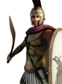

RIS wiki › RIS Classic › settlements
What is already built
| Building chain | Level | Building chain | Level | Building chain | Level | Building chain | Level | ||||
|---|---|---|---|---|---|---|---|---|---|---|---|
| Government (governor) | Governor's Villa | Sanitation | Cisterns (Sanitation) | Roads | Roads | Rainfed Farming (crops) | Contour Furrows (Crops) | ||||
| Walls | Wooden Palisade | Region Information | Region Information Scroll | Military Industrial Complex | Basic Armoury | Temples | Shrine |
What can be recruited here
Nothing can be raised here at the campaign start.
11 more units once the building is up, greyed out, with what each needs.
| Unit | Once you have | Cost | Upkeep | |
|---|---|---|---|---|
| Odrysian Hippakontistai | Homeland | 1,340 | 540 | |
 | Odrysian Royal Warriors | Homeland | 2,450 | 900 |
| Thracian Archers | Homeland | 1,210 | 440 | |
| Thracian Light Lancers | Homeland | 1,660 | 670 | |
| Thracian Longspearmen | Homeland | 1,500 | 550 | |
| Thracian Noble Cavalry | Homeland | 2,880 | 1,160 | |
| Thracian Peltasts (Reform) | Homeland | 1,190 | 440 | |
| Thracian Rhomphaiophoroi | Homeland | 1,670 | 610 | |
| Thracian Royal Bodyguards | Homeland | 4,420 | 70 | |
| Thracian Shieldbearers | Homeland | 1,980 | 730 | |
| Thracian Slingers | Homeland | 930 | 340 |